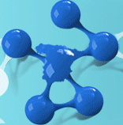

")
")
Red Temática de Linked Data
En los últimos años, varios grupos de investigación en España han comenzado a trabajar en el área del Linked Data. Estos grupos participan por separado tanto en importantes iniciativas y consorcios europeos, como en colaboraciones con empresas e instituciones nacionales e internacionales.
Objetivos
La red temática nacional que se propone está abierta a nuevos miembros y tiene como objetivo principal facilitar el intercambio y transferencia de conocimientos entre grupos de investigación nacionales asociados a Universidades, Centros Tecnológicos y empresas). Asimismo, se intentará incrementar el intercambio y transferencia de conocimientos con investigadores españoles que se encuentran actualmente trabajando en el extranjero en áreas relacionadas. Creemos que fomentando el intercambio y transferencia de conocimientos se conseguirá asimismo aumentar la visibilidad internacional de la investigación española en Linked Data, además de una mayor cohesión interna.
Para conseguir este objetivo general se han definido una serie de instrumentos, que se detallan a continuación:
- Reuniones periódicas de investigación y evangelización, con empresas y administraciones públicas, bajo el formato de voCamps, Linked Data meetups, y desayunos de trabajo.
- Creación de itinerarios formativos y material educativo (tutoriales on-line, transparencias, etc.).
- Fomento de la movilidad de los investigadores por el territorio nacional.
Para una descripción más detallada visite la web del proyecto.
Participantes
Las intituciones involucradas en el desarrollo del proyecto son:
- Ontology Engineering Group - Universidad Politécnica de Madrid
- Bases de Datos Interoperantes - Universidad del País Vasco/Euskal Herriko Unibertsitatea
- Centro para las Tecnologías Inteligentes de la Información y sus Aplicaciones (CETINIA) - Universidad Rey Juan Carlos
- DeustoTech, INTERNET Unit - Universidad de Deusto
- Group for Artificial Intelligence Applications - Universidad Complutense de Madrid
- Grupo de Investigación en Interacción Persona-Ordenador e Integración de Datos - Universitat de Lleida
- Grupo de Sistemas Inteligentes - Universidad Europea de Madrid
- Grupo de Ontologías - Universidad San Pablo CEU
- Grupo de Sistemas de Información Avanzados - Universidad de Zaragoza
- Grupo de Sistemas Inteligentes - Universidad de Santiago de Compostela
- Grupo de Tecnologías de Modelado, Procesamiento y Gestión del Conocimiento - Universidad de Murcia
- Grupo KHAOS - Universidad de Málaga
- Laboratorio de Tecnologías Web - Universidad Carlos III de Madrid
- OntoQuercus - Universidad de Extremadura
- Sistemas de Información Distribuidos - Universidad de Zaragoza
- The Distributed Group - Universidad de Sevilla
- Unidad de Tecnologías Semánticas, Área de I+D+i - Fundación CTIC
- Grupo WESO - Web Semántica Oviedo - Universidad de Oviedo
Publicaciones y otros resultados

Created under Creative Commons License - 2015 OEG.